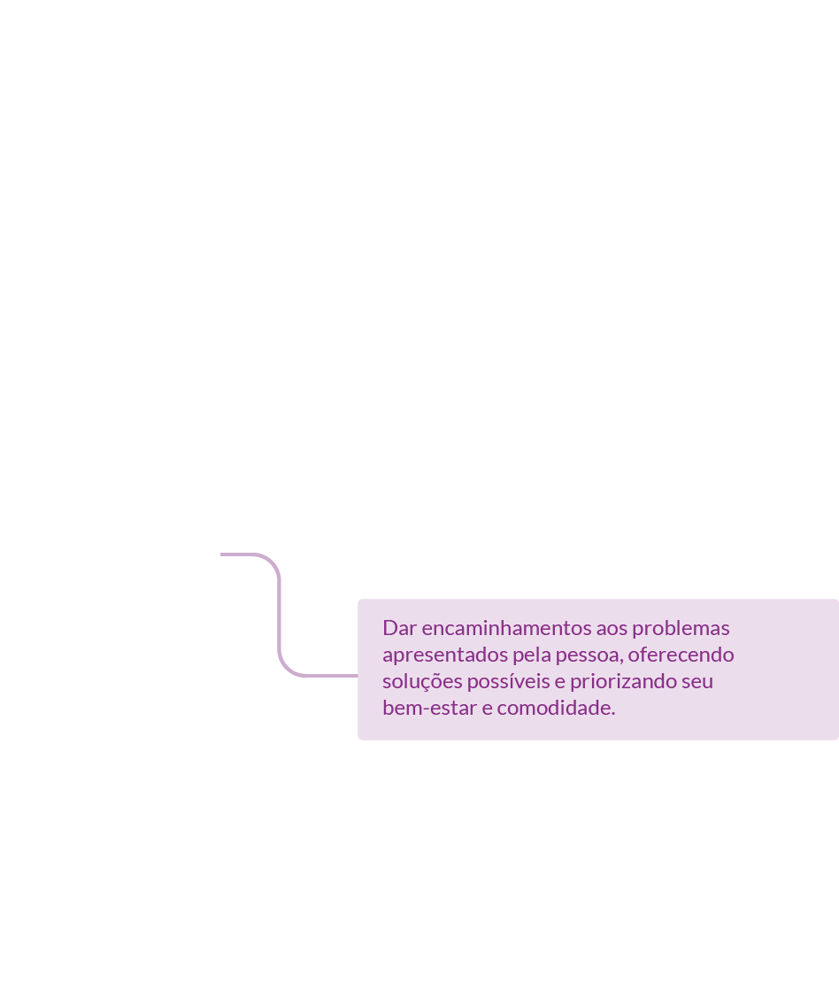
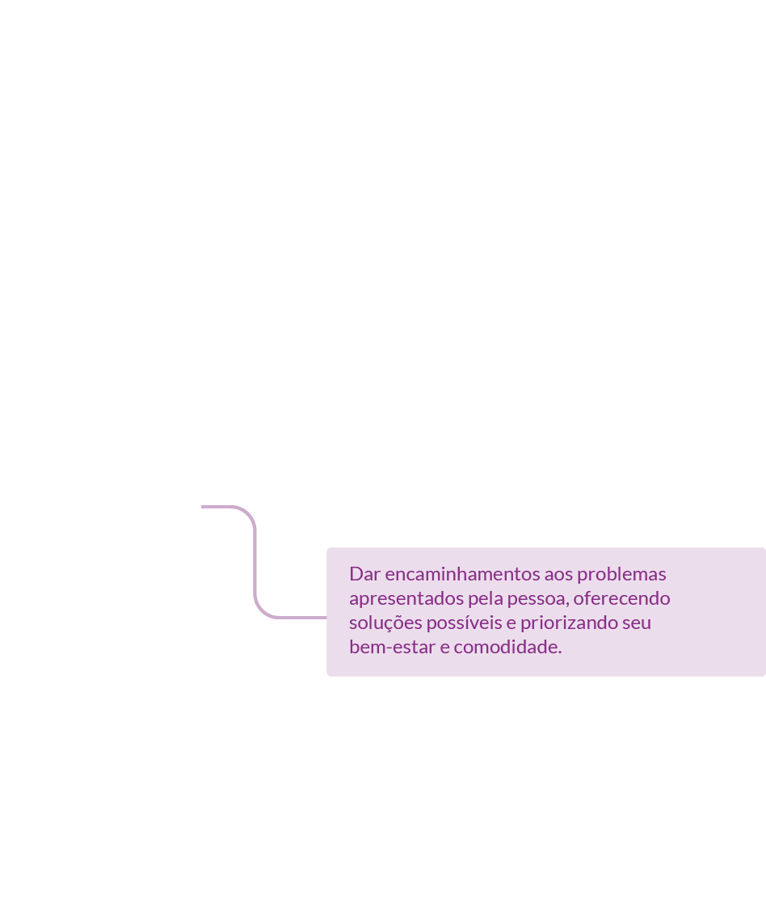

Nesta aula, você vai conhecer a legislação sobre abortamento no Brasil e entender como funciona o chamado sistema das exceções. De modo geral, o abortamento induzido é criminalizado no Brasil, mas há algumas situações em que ele é permitido.
São essas situações que você conhecerá mais a fundo, mas também aprenderá um pouco sobre as consequências danosas da criminalização.
O Código Penal de 1940 autoriza o abortamento nas situações em que há risco à vida da pessoa gestante e no caso da gravidez resultante de estupro. Em 2012, o Supremo Tribunal Federal, no contexto da Ação de Descumprimento de Preceito Fundamental n. 54, autorizou também a interrupção legal da gestação em casos de fetos anencefálicos.
Conheça, na íntegra, a Lei nº 2.848 do Código Penal e a decisão do STF na Arguição de descumprimento de preceito fundamental 54
Apesar de ser previsto em lei há muitas décadas, o primeiro serviço para assistência de abortamento legal no Brasil foi estruturado apenas em 1989, no Hospital Dr. Arthur Ribeiro de Saboya, na cidade de São Paulo.
Conheça, na íntegra, a Lei nº 2.848 do Código Penal e a decisão do STF na Arguição de descumprimento de preceito fundamental 54
Ponto de reflexão
Aqui vale uma pequena pausa para refletirmos. Considerando-se o Código Penal de 1940, e tendo o primeiro serviço para abortamento começado a funcionar em 1989, o que será que mudou até os dias de hoje? Sua cidade conta com um serviço de abortamento legal? Você sabe como ele funciona?
Para entender melhor esse cenário, veja ao lado, no É científico o mapa com os estabelecimentos do SUS que oferecem os serviços de abortamento previstos em lei no Brasil.
Apesar da ampliação do número de serviços de atenção ao abortamento previsto em lei no país desde a criação do primeiro em 1989, há ainda uma série de barreiras de acesso. A primeira delas é a concentração em algumas regiões do país. Como você pôde observar, praticamente não há serviços estruturados na região Norte e há poucos na região Centro-Oeste.
Quer saber mais sobre as barreiras de acesso ao abortamento previsto em lei? Veja a seguir as principais barreiras identificadas pelo estudo de Madeiro e Diniz (2016).
| Barreiras encontradas para o serviço de atenção ao abortamento no Brasil: |
|---|
| O isolamento geográfico e a falta de serviços em todos os estados. |
| Nem todos os serviços existentes se encontram ativos. |
| Muitos serviços desencorajam as pessoas que os buscam a realizar a interrupção da gestação. |
| Muitos serviços, contrariando a lei, exigem boletim de ocorrência para realizar o atendimento. |
| Muitas pessoas não têm acesso à informação de que podem buscar ajuda em um serviço de atenção ao abortamento previsto em lei. |
| Muitas mulheres não declaram que sofreram violência sexual, especialmente quando o agressor é parceiro íntimo. |
| A veracidade do estupro muitas vezes é questionada por profissionais de saúde e mulheres são revitimizadas ao buscar um serviço que é seu direito. |
| Profissionais se recusam a realizar o abortamento, fazendo uso da chamada objeção de consciência (conceito que será estudado mais à frente). |
| Profissionais de atenção primária à saúde desconhecem os direitos de uma pessoa frente a uma gravidez indesejada e para quais serviços encaminhar. |
| Muitas pessoas sofrem violências institucionais nos serviços, como negligência, atendimento tardio, interrogações repetidas, discriminação social e racismo. |
| Muitos serviços não contam com equipe de assistência específica. |
| A maioria dos serviços impõe limite gestacional para a realização do procedimento. |

Interaja com o mapa Tudo sobre aborto legal no Brasil que contém a localização desses estabelecimentos.
Interaja com o mapa Tudo sobre aborto legal no Brasil que contém a localização desses estabelecimentos.
Como você pôde observar na longa lista, as barreiras de acesso ao abortamento previsto em lei no Brasil são inúmeras e de diferentes ordens – há barreiras sociais, econômicas, educacionais e estruturais, mas muitas dessas podem ser superadas com o trabalho de profissionais de saúde como você.
Sobre o limite de idade gestacional para realização de abortamento, é importante saber que o Código Penal brasileiro não o estabelece. Assim, o abortamento previsto em lei pode ser realizado sempre que a equipe de saúde entenda ser seguro e adequado.
As Normas Técnicas do Ministério da Saúde definem o abortamento de acordo com a idade gestacional (até 20-22 semanas). Contudo, as normas técnicas são regulações que estabelecem um mínimo do cuidado a ser prestado e devem ser interpretadas de acordo com a Constituição, as leis e as melhores evidências científicas.
Leia este artigo do portal digital Catarinas e saiba mais sobre abortamento previsto em lei no Brasil.
Leia este artigo do portal digital Catarinas e saiba mais sobre abortamento previsto em lei no Brasil.
Para saber mais sobre o acesso ao abortamento previsto em lei no Brasil, ouça o podcast “Inovação, ciência e tecnologia para avançar o acesso ao aborto no SUS”.
Nos hospitais em que há uma equipe específica para esse serviço, ela é multiprofissional e formada por profissionais das seguintes áreas: assistência social, psicologia, enfermagem, obstetrícia, ultrassonografia e anestesia. Esses(as) profissionais de saúde precisam se comprometer com o acolhimento e a realização de procedimentos técnicos eficazes e seguros.
Quer saber mais sobre como deve ser o acolhimento humanizado na saúde para casos de abortamento? Clique no play e assista ao vídeo com a doutora em saúde pública Emanuelle Goes.
E como deve ser o acolhimento feito por essa equipe? É o que você vai saber a seguir.
No caso do serviço de atenção ao abortamento previsto em lei, o acolhimento deve ser pautado pelo atendimento integral às necessidades da pessoa sob cuidados e envolve escuta qualificada em atenção às recomendações e às Normas Técnicas do Ministério de Saúde.
Acolhimento é o tratamento digno e respeitoso, que inclui a escuta ativa sem pré-julgamentos ou imposição de valores, o reconhecimento e a aceitação das diferenças. Ele inclui também o acesso à assistência e o respeito ao direito da pessoa de decidir sobre os procedimentos a serem tomados. Acolhimento é uma tarefa de toda a equipe de saúde.
Para saber mais sobre o acesso ao abortamento previsto em lei no Brasil, ouça o podcast “Inovação, ciência e tecnologia para avançar o acesso ao aborto no SUS”.
Dar as orientações corretas sobre o abortamento pressupõe fornecer à pessoa sob cuidados, de modo claro e acessível, as informações necessárias para que ela conduza o seu próprio tratamento, tenha segurança na tomada de decisões e possa exercer o autocuidado, em consonância com as diretrizes do Sistema Único de Saúde - SUS.

É muito importante que você, como profissional de saúde, certifique-se de que cada dúvida e preocupação seja devidamente esclarecida para garantir que a pessoa tome uma decisão informada. Cabe a você adotar uma “atitude terapêutica”, buscando desenvolver uma escuta ativa e uma relação de empatia.
A empatia requer uma comunicação em sintonia com as demandas da pessoa sob cuidados e a capacidade de se colocar no lugar dela, de modo a compreender a situação pela qual ela está passando.
É muito importante que você, como profissional de saúde, certifique-se de que cada dúvida e preocupação seja devidamente esclarecida para garantir que a pessoa tome uma decisão informada. Cabe a você adotar uma “atitude terapêutica”, buscando desenvolver uma escuta ativa e uma relação de empatia.
A empatia requer uma comunicação em sintonia com as demandas da pessoa sob cuidados e a capacidade de se colocar no lugar dela, de modo a compreender a situação pela qual ela está passando.
Como você pôde observar na aula anterior, o abortamento ainda é um tema carregado de estigma na sociedade brasileira e, por isso, passar por essa situação pode causar sofrimento, dor, autojulgamento e vergonha.
Da mesma forma, há pessoas que relatam sentir alívio e conforto. Essa multiplicidade de reações e sentimentos que a experiência do abortamento pode gerar é que torna tão importante o acolhimento por parte de profissionais de saúde.
Como é destacado na Norma Técnica de Atenção Humanizada ao Abortamento do Ministério da Saúde, a postura acolhedora da equipe multiprofissional é fundamental para a criação de um ambiente de empatia e confiança que dará segurança e conforto à pessoa em situação de abortamento.
Conheça na íntegra a Norma Técnica de Atenção Humanizada ao Abortamento do Ministério da Saúde.
Dentro da equipe, algumas responsabilidades são específicas de cada categoria profissional. As atribuições a seguir são de toda a equipe, mas principalmente de profissionais de medicina e enfermagem.
Conheça na íntegra a Norma Técnica de Atenção Humanizada ao Abortamento do Ministério da Saúde.
 

Agora que você já conheceu as responsabilidades que lhe cabem como profissional da medicina ou enfermagem, chegou a hora de conhecer o que a Norma Técnica indica como responsabilidade específica de profissionais do serviço social e da saúde mental.
Como você já viu neste curso, a atenção integral à saúde requer não apenas que tenhamos atenção à dimensão biomédica do cuidado, mas também que cuidemos dos impactos sociais e psíquicos relacionados. Por isso, a participação de profissionais da psicologia e do serviço social no atendimento à pessoa em situação de abortamento é fundamental!
Clique nas abas a seguir e veja quais são responsabilidades de profissionais de saúde mental e serviço social:
London is the capital city of England.
Paris is the capital of France.
Tokyo is the capital of Japan.


Você já tomou conhecimento das responsabilidades da equipe multiprofissional, mas você sabe o que é consentimento livre e informado? Siga em frente para conhecer esse conceito.
O consentimento livre e informado consiste na aceitação pela pessoa que está sob cuidados dos procedimentos a que ela será submetida. Ele se dá por meio da assinatura de um documento.
Para que seja livre, a pessoa não pode estar sob qualquer tipo de pressão, coação ou constrangimento, físico ou psicológico.

Para que seja informado, é fundamental que sejam fornecidas informações claras e acessíveis sobre os procedimentos técnicos que serão adotados, sobre as medidas para o alívio da dor, o tempo de duração do procedimento, o período de internação, a garantia do sigilo e privacidade, a segurança do procedimento e os possíveis riscos envolvidos.
No caso do abortamento, é comum haver dúvidas envolvendo riscos sobre o procedimento, tempo de recuperação, seu impacto sobre a fertilidade futura e questões legais. Por isso, é muito importante esclarecer todas as dúvidas que a pessoa sob cuidados possa ter.
A legislação exige o consentimento livre e informado para o abortamento em quaisquer circunstâncias, salvo em caso de iminente risco de vida. Se a pessoa estiver impossibilitada de consentir, esse consentimento deverá ser obtido junto a seus familiares próximos. De acordo com os artigos 3o, 4o, 5o, 1631, 1690, 1728 e 1767 do Código Civil brasileiro:
A outra circunstância em que é necessário o consentimento de representante legal (pessoa curadora ou tutora) refere-se à pessoa que, por qualquer razão, não tenha condições de discernimento e de expressão de sua vontade, por exemplo: uma pessoa com deficiência mental, em situação de extrema vulnerabilidade, declarada incapaz em procedimento judicial ou ainda alguém inconsciente.
Além do exame clínico, a ultrassonografia é o exame complementar utilizado para esses casos. Esse exame determina a idade gestacional e auxilia na escolha do método do abortamento.
Quando não for possível realizar a ultrassonografia, e afastados os fatores de risco para gravidez ectópica (sangramento e dor pélvica), é possível calcular a idade gestacional a partir da data da última menstruação (DUM), contando o número de dias da DUM até o dia atual e dividindo esse valor por 7.
A seguir você vai conhecer quais os documentos necessários para realizar o abortamento legal.
Como o abortamento é autorizado apenas em algumas situações pela lei brasileira, exige-se a assinatura de alguns documentos pela pessoa ou pela criança ou adolescente que fará o procedimento e seu responsável. Clique nas imagens a seguir e conheça agora esses documentos:
Mas não é só a pessoa ou seu(sua) representante legal que precisa assinar documentos, a equipe médica também tem a responsabilidade de assinar alguns termos. Veja a seguir quais são eles:
A assinatura desses documentos é importante para garantir a segurança de profissionais e da pessoa em situação de abortamento previsto em lei.
Mas você não pode esquecer que o objetivo central do atendimento é o cuidado humanizado e empático e, portanto, a documentação é apenas um meio para se atender esse objetivo. É fundamental que a equipe esteja atenta para não transformar esse momento de cuidado em um processo frio e burocrático e não criar barreiras ao acesso do direito.
Como você pôde observar no início desta aula, o direito brasileiro autoriza o abortamento em três situações específicas: risco à vida, violência sexual e em casos de fetos anencefálicos. Veja as especificidades de cada caso a seguir.
Nessa situação, é necessário o laudo de dois(duas) médicos(as), incluindo, sempre que possível, o(a)especialista na área médica da doença que coloca a vida em risco.
O laudo deve conter uma descrição detalhada do quadro clínico e do impacto na saúde de quem está gestante, baseando em evidência científica a recomendação da interrupção da gestação. O prontuário médico deverá conter as justificativas médicas, detalhando o risco materno.
Além disso, é indispensável obter o consentimento prévio, livre e informado (Termo de Consentimento Livre e Informado) da pessoa gestante ou familiares, quando ela não tiver condições de concedê-lo.
É importante também saber se a gestação era desejada e assegurar um acompanhamento psicológico adequado.
Importante ressaltar que, no caso em que a pessoa gestante corre risco de morte, não é necessária autorização judicial, boletim de ocorrência ou comunicação ao CRM.
Essa é uma das situações de abortamento previstas em lei. A seguir veja o que você, profissional de saúde, deve fazer em caso de violência sexual.
Há uma alta prevalência de violência e abuso sexual no Brasil. Por isso, profissionais de saúde têm diante de si a importante tarefa de identificar situações de violência que possam autorizar o direito ao abortamento previsto em lei, mesmo quando elas não se apresentem como tais, oferecer às vítimas a informação sobre seu direito. Assim elas poderão decidir se querem levar adiante a gestação fruto de uma relação não consentida ou se querem interrompê-la.
Precisamos ter claro que estupro não é só aquele que acontece por um desconhecido que aponta uma arma para a cabeça da vítima. Qualquer situação de relação sexual não consentida pode ser considerada estupro.
Por isso, é necessário que profissionais de saúde tenham uma postura que chamamos de “alta suspeição”, ou seja, deve-se investigar se a gestação é desejada e se é fruto de uma relação consentida.
No caso de suspeita de violência sexual sofrida por paciente com resultado positivo para gravidez, deve-se iniciar a conversa procurando entender as circunstâncias em que a gravidez ocorreu e como a pessoa sob cuidados se sente em relação a ela.
É necessário também que você garanta um espaço que ofereça privacidade para a entrevista, de preferência onde não haja a presença de pessoas que possam inibir o relato. A equipe deve estar alerta para manter o sigilo, a fim de não criar estigmas sobre o atendimento. Podem-se utilizar perguntas diretas e indiretas e avaliar se a pessoa deseja falar sobre o assunto ou não, respeitando seu desejo.
As perguntas a seguir podem auxiliar em uma efetiva comunicação com pacientes, clique nas setas e veja quais são:

TEXT_2
Perguntas indiretas:
TEXT_2
Perguntas diretas:
 Previous
Previous
 Next
Next
Todos os documentos necessários para o abortamento nos casos de violência sexual serão colhidos no hospital em que o procedimento será realizado. São três os documentos pelos quais a pessoa opta pelo abortamento e se responsabiliza pelos fatos narrados à equipe médica como verdadeiros: Termo de Relato Circunstanciado, Termo de Consentimento Livre e Esclarecido e Termo de Responsabilidade.
Segundo a Portaria MS/GM n° 2.282/2020 do Ministério da Saúde, são necessários ainda um parecer técnico do(a) profissional de medicina que ateste a compatibilidade da idade gestacional com a data da violência sexual relatada e um termo que aprove o procedimento de interrupção da gravidez, assinado por no mínimo três integrantes da equipe multiprofissional.
Não é necessário apresentar Boletim de Ocorrência Policial, Laudo do Instituto Médico Legal ou Autorização Judicial. Para o abortamento previsto em lei em caso de estupro, é suficiente o relato da vítima ao serviço de saúde.
A palavra da pessoa que busca os serviços de saúde afirmando ter sofrido violência tem credibilidade ética e legal, devendo ser recebida como verdadeira por profissionais de saúde. Segundo Diniz et al. (2014, p. 293):
É preciso acreditar no que diz a mulher que se apresenta como vítima e testemunha de sua própria violência. No entanto, estudos demonstram que não basta o texto da mulher; a verdade do estupro é construída no encontro entre os testes de verdade sobre o acontecimento da violência e a leitura sobre a subjetividade da vítima.
Essa situação, tão comum na sociedade em geral, também ocorre em alguns serviços de saúde. Em muitos desses serviços, as pessoas que buscam cuidado passam por procedimentos interrogatórios que se assemelham a inquéritos policiais, com múltiplas entrevistas que parecem buscar possíveis contradições na sua narrativa. Esse tipo de comportamento é inaceitável, tanto do ponto de vista legal quanto ético, dentro de um serviço de saúde.
É nessa duplicidade de guardiões da lei penal e da imoralidade do aborto que as práticas de inquérito pela verdade do estupro surgem no encontro dos profissionais com as mulheres.
O objetivo do serviço de saúde é garantir o exercício do direito à saúde, portanto não cabe à equipe de saúde duvidar da palavra da vítima, o que agravaria ainda mais as consequências da violência sofrida. Os procedimentos do serviço de saúde não devem ser confundidos com procedimentos investigativos reservados à Polícia e à Justiça.
Assim, para o atendimento às pessoas em situação de violência sexual, são necessários alguns cuidados importantes. Veja quais são eles:
Segundo o 13º Anuário Brasileiro de Segurança Pública (Fórum Brasileiro de Segurança Pública, 2019), em 2018 foram registrados 66.041 casos de violência sexual em todo o país. O dado representa 180 estupros por dia e um aumento de 4,1% quando comparado ao ano anterior.
Quem são as vítimas de violência sexual? Clique nas imagens para conhecer.
Fonte: Anuário Brasileiro de Segurança Pública (2019, p. 9).
Com esses dados você pode perceber que quatro meninas de até 13 anos são estupradas por hora no Brasil!
A elevada prevalência da violência sexual exige, portanto, que o maior número possível de unidades de saúde estejam preparadas para atuar nos casos de emergência.
O atendimento imediato aos casos de violência sexual permite oferecer medidas de proteção e prevenção, como a anticoncepção de emergência e as profilaxias das Infecções Sexualmente Transmissíveis (ISTs), hepatite B e HIV/Aids, evitando assim danos futuros para a saúde da pessoa vítima de violência.
Embora a maioria dos casos sejam atendidos em hospitais, todos os estabelecimentos de saúde deveriam estar preparados para oferecer esse cuidado da forma mais facilitada possível.
Os dados obtidos durante a entrevista, no exame físico e ginecológico, os resultados de exames complementares e relatórios de procedimentos devem ser cuidadosamente registrados em prontuário. É recomendada a utilização de fichas específicas de atendimento para os casos de violência sexual. O cuidado com o prontuário é de extrema importância, tanto para a qualidade da atenção em saúde quanto para eventual uso em processo judicial.
Os danos físicos, genitais ou extragenitais, devem ser cuidadosamente descritos em prontuário. Se possível, os traumatismos físicos devem ser fotografados e também anexados ao prontuário. Na indisponibilidade desse recurso, representações esquemáticas ou desenhos podem ser utilizados e igualmente incluídos no prontuário.
O atendimento de pessoas em situação de violência sexual, assim como qualquer outro atendimento de saúde, exige que sejam observados o sigilo e a ética profissional.
A Constituição Federal, artigo 5°, estabelece que “são invioláveis a intimidade, a vida privada, a honra e a imagem das pessoas, assegurando o direito à indenização material ou moral decorrente de sua violação”. Portanto, é direito da pessoa sob cuidados que os fatos e informações relatados a você profissional da saúde não sejam revelados a quem quer que seja.
O artigo 154 do Código Penal Brasileiro, caracteriza como crime “revelar alguém, sem justa causa, segredo, de que tem ciência em razão de função, ministério, ofício ou profissão, e cuja revelação possa produzir dano a outrem”.
Para entender melhor sobre o sigilo profissional, assista ao vídeo com o juiz de Direito José Henrique Rodrigues Torres no ambiente virtual do curso.
Ou seja, a garantia do sigilo é um dever ético e legal de você profissional de saúde, e um direito da pessoa assistida.
É importante notificar qualquer suspeita ou confirmação de violência. A notificação tem um papel estratégico no desencadeamento de ações de prevenção e proteção no âmbito da segurança pública, além de ser fundamental nas ações de vigilância e monitoramento das situações de saúde relacionadas às violências.
Contudo, essa notificação não deve configurar quebra de sigilo profissional – os dados pessoais da paciente não podem ser revelados, apenas os números e circunstâncias dos casos atendidos, sempre preservando a anonimidade dos dados.
A Portaria GM/MS 78, de 2021, regula a notificação e estabelece que “a comunicação dos casos de violência contra a mulher à autoridade policial deverá ser feita de forma sintética e consolidada, não contendo dados que identifiquem a vítima e o profissional de saúde notificador”.
Conheça a Portaria GM/MS 78 na íntegra.
Conheça a Portaria GM/MS 78 na íntegra.
Em crianças e adolescentes menores de 18 anos de idade, a suspeita ou a confirmação de abuso sexual deve, obrigatoriamente, ser comunicada ao Conselho Tutelar ou à Vara da Infância e da Juventude. Na falta desses órgãos, deve-se comunicar à Vara de Justiça existente no local ou à Delegacia, sem prejuízo de outras medidas legais, conforme o artigo 13 do Estatuto da Criança e do Adolescente (ECA).
Para que você saiba exatamente o que deve fazer legalmente em caso de violência sexual contra crianças e adolescentes, leia o Estatuto da Criança e do Adolescente.
Para que você saiba exatamente o que deve fazer legalmente em caso de violência sexual contra crianças e adolescentes, leia o Estatuto da Criança e do Adolescente.
Como você pôde perceber, em casos de violência sexual são necessários muitos cuidados. Agora, siga em frente para saber como a equipe de saúde deve atuar na última situação de abortamento previsto em lei no Brasil, que é a anencefalia fetal.
Nos casos de anencefalia fetal, os documentos necessários para que possa ser realizado o abortamento são:
De acordo com o Ministério da Saúde, nas situações em que a pessoa gestante realizar a opção esclarecida pela interrupção da gestação, é importante que você profissional de saúde a informe sobre os riscos de recorrência da anencefalia e a oriente quanto ao acesso aos programas de planejamento familiar com assistência à contracepção (BRASIL, 2014).
Além disso, cabe destacar que existem outros diagnósticos de anomalias fetais com inviabilidade de vida extrauterina, contudo a decisão do Supremo Tribunal Federal só permite a interrupção em caso de anencefalia. Nessas outras situações, pode-se solicitar a realização do abortamento ao poder judiciário, que, entendendo ser o caso, expedirá um alvará judicial. O pedido deverá ser instruído com os mesmos documentos necessários para o procedimento no hospital.
Leia aqui a Norma Técnica de Atenção às Mulheres com Gestação de Anencéfalos, do Ministério da Saúde.
Leia aqui a Norma Técnica de Atenção às Mulheres com Gestação de Anencéfalos, do Ministério da Saúde.
A seguir, você verá como deve proceder em casos de abortamento de menores de idade e quais normas regem esses casos.
Atendimento a menores de idade pode suscitar dúvidas, assim requer mais cuidados. Por isso separamos uma seção que trata especificamente desses casos.
Normalmente nesses casos a família está envolvida e é bom saber o que pode ou não ser revelado a ela. Veja o que diz o Código de Ética Médica:
É vedado ao médico revelar segredo profissional referente a paciente menor de idade, inclusive a seus pais ou responsáveis legais, desde que o adolescente tenha capacidade de avaliar seu problema e de conduzir-se por seus próprios meios para solucioná-los, salvo quando a não revelação possa acarretar danos ao paciente .
Agora veja o que diz o Estatuto da Criança e do Adolescente (ECA): “a) Considera-se criança a pessoa menor de 12 anos de idade; e adolescente, a partir dos 12 e antes de completar 18 anos; e b) Deve prevalecer o princípio do respeito à sua opinião e vontade.”
A assistência à saúde da menor de 18 anos em abortamento deve se submeter ao princípio da proteção integral. Se a revelação à família for feita para preservá-la de danos, estaria afastado o crime de revelação de segredo profissional.
Entretanto, a revelação do fato também pode acarretar prejuízos ainda mais graves, como o seu afastamento do serviço de saúde pela família e consequentemente a perda da confiança nos(as) profissionais de saúde que a assistem. A decisão, qualquer que seja, deve estar justificada no prontuário da adolescente.
Agora, abordaremos um aspecto que pode surgir no contexto da assistência às pessoas em situação de abortamento, que é a objeção de consciência. Vamos entender melhor o que é isso?
Segundo Diniz, a objeção de consciência é:
[...] um dispositivo normativo de códigos profissionais e de políticas públicas que visa proteger a integridade de pessoas envolvidas em uma situação de conflito moral. Em um conflito entre deveres públicos e direitos individuais, esse dispositivo é acionado para proteger a moral privada do indivíduo, como no caso do profissional de medicina ou enfermagem que declara objeção de consciência para não atender uma mulher que deseja abortar legalmente. Em nome de convicções individuais, esse dispositivo protegeria o sentimento de integridade moral do profissional, ao autorizá-lo a não participar de um procedimento que acredita ser moralmente errado, embora legal.
Profissionais de saúde podem invocar a objeção de consciência e recusar a realização do abortamento. No entanto, é seu dever profissional informar a pessoa sobre seus direitos e garantir o acesso ao serviço de abortamento previsto em lei, encaminhando-a para outro(a) profissional da instituição ou de outro serviço.
É importante ressaltar que existem casos em que não é possível invocar a objeção de consciência. Essas situações são as seguintes:
A seguir, conheça o que dizem o Código de Ética Médica e o Código de Enfermagem, para que não fique dúvida sobre o que você pode ou não fazer. Primeiro, observe o que diz o Código de Ética Médica clicando nos títulos:
Agora, clique nas imagens e veja o que diz o Código de Enfermagem e como que ele trata desse assunto:
Em caso de omissão de socorro, o(a) profissional de saúde pode ser responsabilizado(a) civil e criminalmente pela morte da pessoa ou pelos danos físicos e mentais que ela venha a sofrer, pois podia e devia agir para evitar tais resultados. O artigo 13, parágrafo 2º do Código Penal, estabelece ser relevante a omissão “quando o omitente devia e podia agir para evitar o resultado. O dever de agir incumbe a quem tenha por lei obrigação de cuidado, proteção ou vigilância”, que é o caso de profissionais de saúde que fizeram a opção por uma profissão de cuidado.
Acesse o Código de Ética Médica e o Código de Enfermagem para saber mais sobre o assunto.
Acesse o Código de Ética Médica e o Código de Enfermagem para saber mais sobre o assunto.
Como você pôde observar, os códigos de ética de diferentes categorias profissionais asseguram a você profissional de saúde o direito de recusar o atendimento em caso de conflito com sua consciência. Mas essa recusa não pode acontecer quando a negativa do atendimento coloca em risco a vida da pessoa que busca cuidados ou quando se trata de emergência. Em todas as situações de objeção de consciência, o atendimento deve ser garantido por outro(a) profissional de saúde, pois o exercício do direito profissional não pode significar a negativa do direito à saúde da paciente.
Dessa forma, é dever do estado manter nos hospitais públicos profissionais que realizem o procedimento do abortamento. E, caso a pessoa venha a sofrer prejuízo de ordem moral, física ou psíquica em decorrência da omissão, poderá́ haver responsabilização civil, administrativa, penal pessoal e/ou institucional.
Você chegou ao final desta aula. Nela você conheceu as situações em que o abortamento é previsto em lei no Brasil. Viu também o que é responsabilidade de profissionais de saúde nesses casos. Siga em frente!